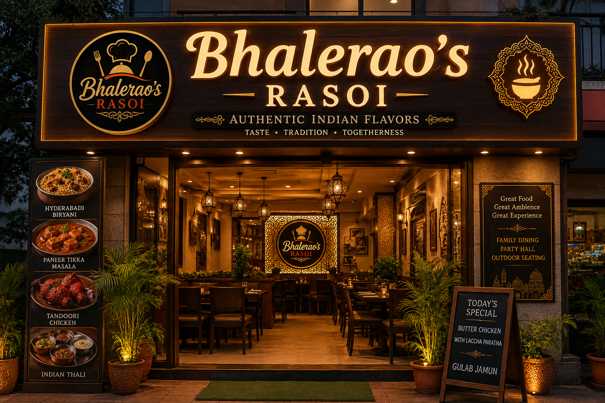
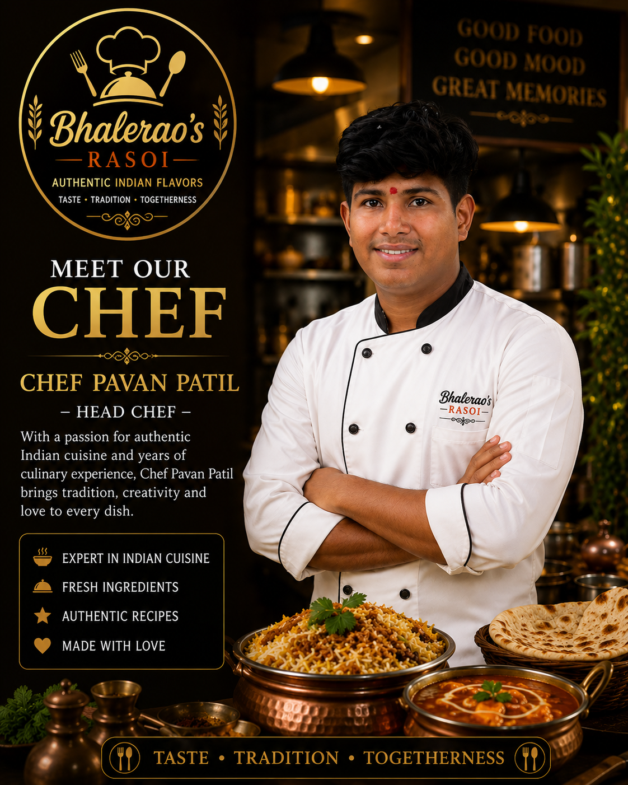

Bhalerao's Rasoi is an Indian restaurant created with a passion for authentic Indian food, traditional recipes and warm hospitality.
Our philosophy is simple: good food brings people together.
Every dish is prepared using carefully selected ingredients, traditional Indian spices and time-tested cooking techniques.
From the aroma of freshly prepared biryani to the taste of traditional Indian desserts, we want every guest to experience the true flavours of India.

Head Chef
With more than 15 years of culinary experience, our chef brings traditional Indian flavours to every plate.
Taste • Tradition • Togetherness
© 2026 Bhalerao's Rasoi